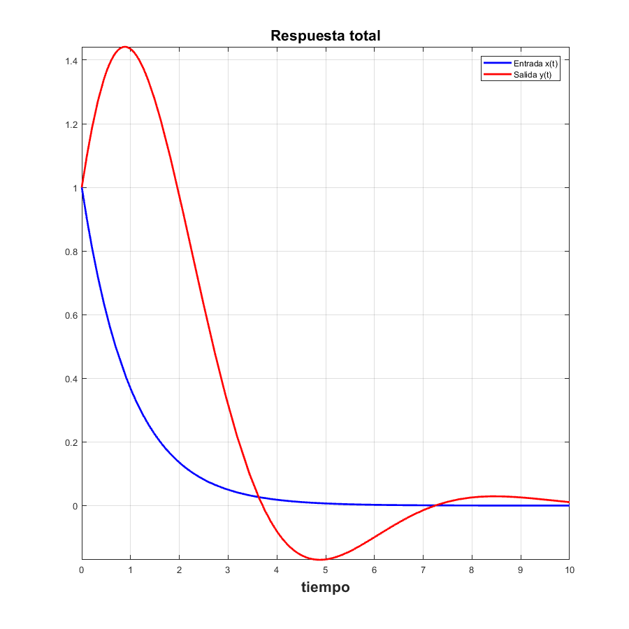

Sistemas en Diferencias
Contents
Ejercicio 3
Determina la respuesta a entrada cero del siguiente sistema
![$y[n+2]+y[n+1]+y[n]=x[n+2]$](ASySPrac6ReneMonroy_eq12408771379856642930.png)
Con condiciones iniciales
![$y[0]=1$](ASySPrac6ReneMonroy_eq08273652189708245026.png) ,
,
sympref('HeavisideAtOrigin',1) syms n; ent0([1,1,1],[1,0,0],[0.5,1],[0,0],0*heaviside(n),5)
ans =
1
La Respuesta a entrada 0 es
y(n)=
n / 1 sqrt(3) 1i \n - 1
(-1) sqrt(3) | - - ---------- | 2i
n / pi n \ \ 2 2 /
- (-1) cos| ---- | - ----------------------------------------
\ 3 / 3
n / sqrt(3) 1i 1 \n - 1
(-1) sqrt(3) | ---------- + - | 2i
\ 2 2 /
+ ----------------------------------------
3

El código de la función utilizada se puede consultar en https://www.dropbox.com/s/zjyewsmb9aw9wxt/ent0.m?dl=0
Ejercicio 4
Determina la resouesta a estado cero del siguiente sistema
Con entrada
![$x[n]=(0.5)^{n}u[n]$](ASySPrac6ReneMonroy_eq07641524355348424264.png)
sympref('HeavisideAtOrigin',1) syms n; ci0([1,1,1],[1,0,0],[0,0],[0.5,1],((0.5)^n)*heaviside(n),5)
ans =
1
La Respuesta a estado 0 es
y(n)=
n / pi n \ / 1 \n n / 1 \n - 1
(-1) cos| ---- | | - | (-1) sqrt(3) | - - #1 | 2i
\ 3 / \ 2 / \ 2 /
----------------- + ------ + --------------------------------
7 7 21
n / 1 \n - 1
(-1) sqrt(3) | #1 + - | 2i
\ 2 /
- --------------------------------
21
where
sqrt(3) 1i
#1 == ----------
2

El código de la función utilizada se puede consultar en https://www.dropbox.com/s/yaxsj8rflrqlwjc/ci0.m?dl=0
Ejercicio 5
Determine la respuesta total del sistema
Con entrada
Y condiciones iniciales
,
sympref('HeavisideAtOrigin',1) syms n; RT([1,1,1],[1,0,0],[0.5,1],[0.5,1],((0.5)^n)*heaviside(n),5)
ans =
1
La Respuesta Total es
y(n)=
/ 1 \n n / pi n \ n / 1 \n - 1
| - | (-1) cos| ---- | 6 (-1) sqrt(3) | - - #1 | 4i
\ 2 / \ 3 / \ 2 /
------ - ------------------- - --------------------------------
7 7 7
n / 1 \n - 1
(-1) sqrt(3) | #1 + - | 4i
\ 2 /
+ --------------------------------
7
where
sqrt(3) 1i
#1 == ----------
2
El código de la función utilizada se puede consultar en https://www.dropbox.com/s/y5agbjjsfn974ho/RT.m?dl=0
Ejercicio 6
Determine la respuesta total del sistema
Con entrada
Y condiciones iniciales
,
sympref('HeavisideAtOrigin',1) syms n; RT([1,1,1],[1,0,0],[0,0],[0.5,1],heaviside(n),10)
ans =
1
La Respuesta Total es
y(n)=
n / pi n \
(-1) cos| ---- |
1 \ 3 /
- - -----------------
3 3
 El código de la función utilizada se puede consultar en https://www.dropbox.com/s/y5agbjjsfn974ho/RT.m?dl=0
Ejercicio 7
figure subplot(3,2,'aling') imshow('ent0.jpg') subplot(3,2,'aling') imshow('ci0.jpg') subplot(3,2,'aling') imshow('RT.jpg') subplot(3,2,'aling') imshow('esc.jpg')
Error using subplot (line 214) Invalid syntax. Error in ASySPrac6ReneMonroy (line 75) subplot(3,2,'aling')